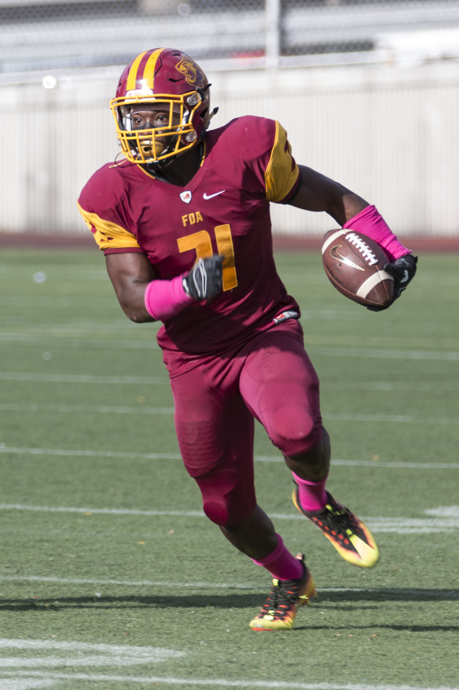
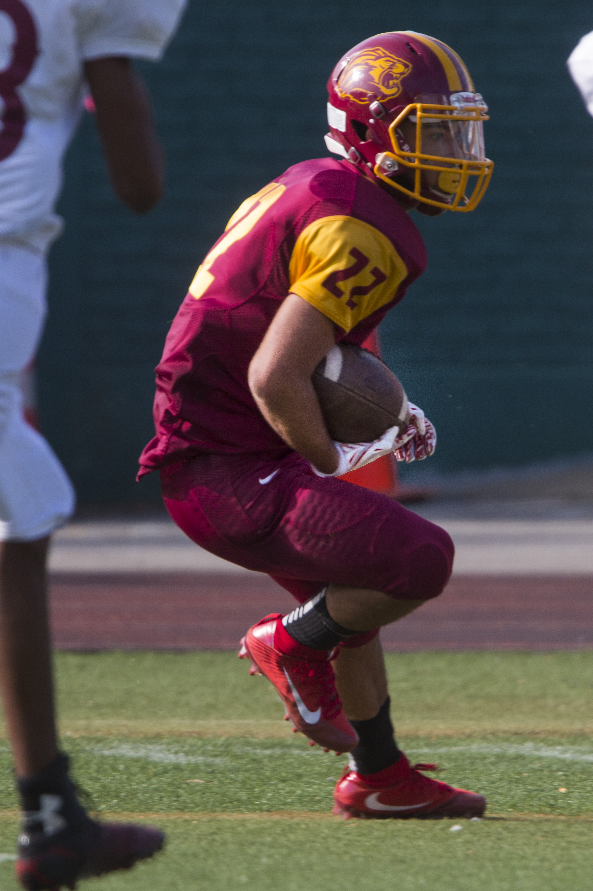
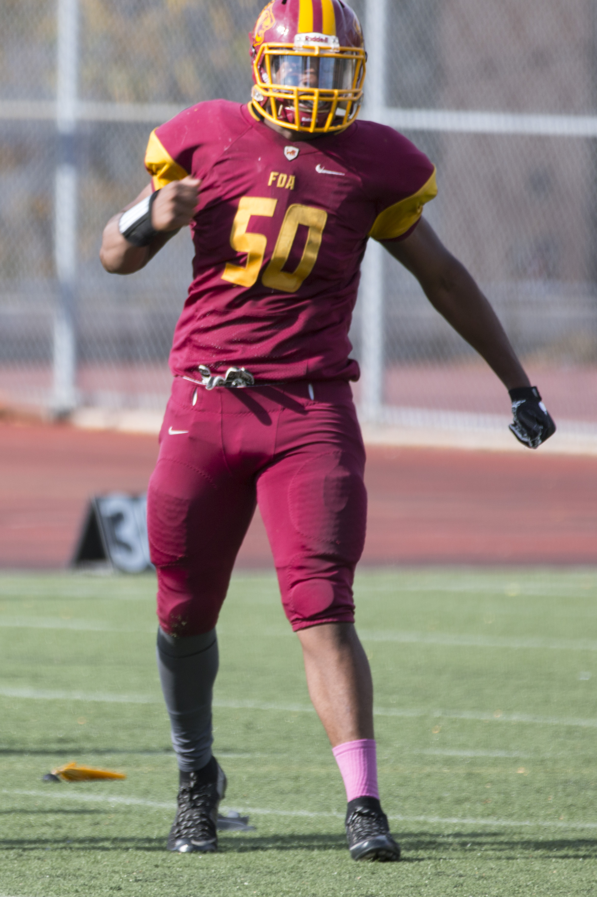

Half A Mile To Hope
By Ryan Kelley
It’s the moment every high school football player dreams of.
The first round of the playoffs, fighting for the right to move on and play for a conference championship. Losing means the season is over, and the seniors will never represent their school on the field again. For most, it could be the last game
they ever play.
On one side of the field is McKee-Staten Island Tech, a perennial playoff team filled with mostly white players. During the week leading up to the game, head coach Anthony Cialdella suggested in an interview with SIlive.com that he was overlooking
this first-round game. He couldn’t wait to get another crack at top-ranked Lehman High School, who beat McKee by one point earlier in the season.
Their opponent could not be more opposite. The mostly black team from Frederick Douglass Academy in East Harlem is a newcomer to the conference. Head coach Andrew Kell, 30, read Cialdella’s comments and made sure his players knew about it.
The two teams are now poised to clash on a sunny November afternoon. Their emotions run high, and so does the score. It’s a back-and-forth exchange of touchdowns in a total offensive shootout, and when the clock runs out in the fourth quarter the
score is tied, 28-28. Overtime.
"Men, this is gonna take as much focus as we’ve ever had right now," Kell says to his players before they run back onto the field. "Can we step up and make plays?"
"Yes, coach!" his team responds.
Kell raises a fist and his players reach their hands toward it as they huddle close and shout the same chant that has carried them all season. "1, 2, 3, Win! 4, 5, 6, Family!"
FDA gets the ball first and the Lions answer their coach’s call to action. A mix of run and pass plays drive them down inside the five-yard line with ease, and a play-action touchdown pass caps it off. They elect to kick the extra point, however,
which is less common than going for two. On the snap, the Mckee linemen get a great push into the backfield and block the kick. But FDA leads the game 34-28.
McKee gets its turn now, and the results are similar. A few run plays break off chunks of yardage until the team is on the goal line once again. After the running back punches in the tying score, he turns right back around for the next play. The
score is 34-34, and McKee is going for two. For the win.
One more stop is all the Lions need to prolong the game. They stuffed McKee on a two-point conversion early in the fourth quarter that kept the score tied. Then they made a goal line stand as time expired to send the game to overtime. One more.
That’s all they need to keep their hopes alive, against all odds.
. . .
The fact that the Lions have made it to that field with McKee is a testament to how talented they are, because everything else surrounding the team says they don’t belong.
Six weeks earlier, a typical Wednesday practice begins as the players leave their final classes and walk into the locker room. The first thing that greets them there is the stench of sweaty shoulder pads. Then they greet each other and the room
quickly fills with commotion. Laughter, shouting and conversations about girls are met with the slamming of lockers and click-clack of cleats on the floor. A portable speaker blasts songs by Lil Uzi Vert and everyone starts dancing while getting
dressed.
Rajay Channer, a senior and captain of the team, is one of the first to break free from the party. He steps out the back door into the warm fall air with nothing but concrete in front of him. There is no football field in sight.
The school is surrounded by a parking lot and enclosed by a chain-link fence. Channer, 17, walks around to the front of the building onto Adam Clayton Powell Jr. Boulevard. He stands at five-foot-ten and 200 pounds, with his practice jersey pulled
up and tucked under his shoulder pads to create a crop top that reveals his muscular core. His teammates follow in scattered groups, with two players pushing shopping carts filled with equipment bringing up the rear.
Seven blocks to go.
It takes the team about 10 minutes to walk the half mile through Harlem streets, turning heads as they pass by pedestrians. Channer’s jersey has the school’s burgundy and yellow colors, but only two thirds of his teammates have them. There aren’t
enough to go around. The others use whatever jerseys their coaches could scrounge up. Many of them wear gym shorts instead of football pants. Channer has a matching helmet, but others have white helmets that have been spray painted burgundy and
yellow.

Senior, MLB/RB
Channer was almost always on the field for the Lions in 2017. On offense, he carried the ball 21 times for 295 yards and three touchdowns. He also caught three passes for 90 yards and one touchdown. On defense, he tallied 28 tackles, one sack
and one fumble recovery.

Senior, SS
Contes was the Lions' full-time strong safety, racking up 25 tackles and two interceptions during the 2017 season.
Channer talks about what happened the previous weekend, when the Lions lost their second straight game, something that hasn’t happened in three years.
"I feel like we needed to lose those two games because they felt entitled, and everyone is just really complacent," Channer says of his teammates. "It goes to show that if you’re not really working hard to get that W, you’re not going
to get it. The two teams that beat us? They’re not better than us."
Their destination is Col. Young Playground, a public park at the corner of 145th Street and Lenox Avenue. The outfield grass in between four softball fields is where the Lions call home. It’s more dirt than grass really, and on a warm dry day like
today, a cloud of dust hangs in the air throughout the practice. It is lumpy and unforgiving, rolled ankles are a daily burden, and wetter days turn the poorly drained field into a swamp. The path leading from the sidewalk to the field is referred
to as “the gauntlet” by assistant coach Dennis Vanella. To the right, a pair of middle-aged men pass a blunt as the marijuana smoke slowly drifts toward the team. To the left, a homeless man is passed out on a park bench next to the dugout where
the team walks onto the field. “If we’re all going to suffer together, we’re going to make sure that it makes us a lot stronger,” Vanella says.
Once the Lions are on the field, that sentiment becomes clear. The team is made up of kids from every part of the city with vastly different backgrounds and personalities. Senior defensive end Shaquille Stewart rides the subway for an hour and a
half every morning to get to school from his home in East New York. Senior quarterback Domingo Garcia, Jr. grew up without his father, who was in Nicaragua until he could legally immigrate to America. Senior strong safety Damien Contes’ grandmother
was murdered in the Bronx nearly two years ago. Sophomore lineman Atari Felton was “gang-banging, smoking, and fighting” until he was able to use sports as a way out.
Yet, despite their hardships the FDA Lions have built one of the most successful football programs in New York City in an incredibly short amount of time. Channer’s first game as a freshman in 2014 was the first varsity football game in school history.
It was also the first game of the Jamaican immigrant’s life. The Lions got beaten badly that day on their way to a disorganized 2-8 season. But in the two years after that, the team went undefeated during the regular season, only to lose in two
straight PSAL Cup Conference championship games. In 2017, FDA has moved up to the Bowl Conference and is playing against tougher competition.
If the Lions are going to bounce back and make another run to the playoffs, Channer knows he’ll have to lead by example. "Talking at this point is just pointless," he says. "We just need action."
. . .
Logistics have been the problem for FDA from the beginning. In 2013, it was former FDA principal Joseph Gates who was inspired to start the team even though he had no field and no equipment to work with. At the time, the Public School Athletic League
hadn’t approved a new football team in six years, Gates says. But several students had told him they wished they could play football, and as a former player he knew "it’s a good way to build leadership qualities and a hard work ethic."
Now he needed the right coach.
Gates sifted through a stack of 300 resumes, he says, and Andrew Kell’s rose straight to the top. Here’s what Gates saw: a New York City Teaching Fellow, who earned his master’s degree in education; a former wide receivers coach for Nassau Community
College; a former assistant coach for South Side High School in Rockville Centre, New York; a former player for the Milano Seamen of the Italian Football League in Italy, where he led the league in receiving; a graduate of CW Post – now called
LIU Post – where he played wide receiver for two years; a graduate of Nassau Community College, where he also played wide receiver for two years; a graduate of South Side High School, where he played wide receiver and defensive back.
When Kell, 30, got the call for an interview, he had already accepted another teaching position in East New York. Besides, he had never been to Harlem before and knew nothing about it, he says. But having the chance to start a football team from
the ground up intrigued him enough to at least give Gates a chance.
"He just sold the heck out of it," Kell says. "I was in right away. I called the other school as soon as I got out of the building and said ‘listen, I’m taking another position.’"
Gates was able to sell it to the PSAL too, which he says was the biggest challenge in getting the program off the ground. He negotiated with Alfred E. Smith High School, just over the Harlem River in the South Bronx, which allowed FDA to play home
games on its field. Gates did that himself before ever presenting the idea to the PSAL, and continued to put other pieces in place. By the time he approached the PSAL, Gates says he had such a complete plan that the league allowed FDA to skip
the developmental seasons that new teams normally have to play.
Now they just needed players. They started small, only putting together a junior varsity team of freshmen and sophomores, and the first day of summer workouts was held inside the school gym. Kell took the train to Harlem from Rockville Centre, and
when he walked into the gym he faced a harsh reality.
"I mean, the kids had no idea," Kell says of their football knowledge. "We have to teach these kids how to tie their shoes before they can do anything else." He was joined by assistant coach James Bramble, an earth science teacher
at the school and former college football player, and James Llewellyn, a social studies teacher. For the next few weeks they met in the gym every day to see who could even throw or catch a football. Once the season started, Gates would join the
coaches as they walked across the 145th Street bridge to practice at a small field at South Bronx High School.
Even with the lack of experience, the coaches figured out positions for every player and focused on the fundamentals. As a shock to the entire school, which Kell says came in large numbers to support the team at its first game against KIPP NYC,
the Lions won in convincing fashion. And they didn’t stop winning. FDA’s inaugural team finished the season 7-1.
A varsity team was born the following season, with Kell assuming the coaching role and Bramble staying as the coach of the JV team. The first varsity season was filled with turmoil, and added another layer of adversity that would prove to be an
ongoing challenge. With seniors now able to join the team, many of them faced a new level of accountability in the classroom. Before FDA’s first varsity game, nine seniors were determined to be ineligible, Kell says. They nearly had to forfeit
the game. Channer started at linebacker as a freshman, but left the team after that game because his grades were dropping too.

Junior, C/DT
Johnson played on both sides of the line, but was a star at defensive tackle. He led the team with 11 sacks on his way to 40 tackles and two fumble recoveries, returning one for a touchdown.
Senior, RB/LB
"Philly," as his teammates call him, was a solid two-way player as well. On offense he carried the ball 17 times for 153 yards and one touchdown, and on defense he tallied 26 tackles in 2017.
Even so, the foundation was in place because of players like Frederick Courvoisieo. A senior who had never played football before joining the team for that first season, Courvoisieo, now 21, committed himself to Kell’s ideals and at the end of the
season was awarded as the most improved player on the team. He has since gone on to attend New York City College of Technology and attributes much of his success to what he learned from Kell.
"The first time I met him I was amazed at his football IQ," Courvoisieo says of his coach. "At practice he gets on us because we have to be perfect . . . off the field he’s a funny person though. He helps you and he’ll be there for you."
And Courvoisieo has been there for Kell, returning every year since graduation to either watch the games or keep track of the team’s stats for his coach. That’s the most rewarding thing for Kell, he says, to be able to see his players in college
and come back to support where they came from: "We don’t want to just be a football team, we want to be a program."
Winning is the other part of building a real program, and that’s exactly what the Lions started to do the following year. During the offseason Kell saw a whole new level of commitment from his team, he says. They spent the spring semester working
out after school and working harder in the classroom. Channer improved his grades enough to return to the team. FDA also hired Kell’s lifelong friend Dennis Vanella to teach math at the school, and the accomplished football player and Army veteran
became the team’s assistant coach.
No longer able to use South Bronx High’s field, this is also when FDA started "squatting" at Col. Young Playground, as Kell puts it. He applies for a permit every year, but the city has never responded, and nobody has tried to kick them
out.
Vanella, 32, brought his disciplinary style with him, but he also relates to his players in a unique way. He was raised in a single parent environment, with his mother on welfare, moving from one apartment to the next in Rockville Centre. He didn’t
own a pair of jeans until the seventh grade, Vanella says. His mom was working two jobs, and there were times when he and his brother didn’t have dinner to eat. As a white man coaching and teaching primarily black and Hispanic kids, Vanella says
his personal life has been crucial to breaking down barriers between them. But he also uses this as a tool, telling them "school is the way you escape this stuff, and football is the way that you alleviate all of these stresses."
With Kell and Vanella’s brotherly dynamic and gifted athletes like quarterback Omari Hill, the Lions developed a true identity and won 23 of their next 25 games over the course of two seasons. Hill, now 19, became the school’s most successful football
player ever at the time, Kell says, and is now playing football at Morrisville State College. More important than the winning, however, was the culture that was starting to emerge.
"To me the team was more like a family," Hill says. "We actually looked forward to hanging out with each other on and off the field."
. . .
The season hangs in the balance as McKee breaks the huddle and the center crouches over the ball. FDA packs in to crowd the line of scrimmage, they know the run is coming. Channer abandons his middle linebacker stance and digs his hand into the
turf next to defensive tackle and fellow senior Will Hooks.
The ball is snapped, and the quarterback drops back to hand the ball to his running back. Using his lower leverage, Channer sneaks through a gap in the offensive line but is clipped just enough to get taken to the ground. As he falls, Channer turns
his head to see the running back, just out of his reach, break an arm tackle and power into the end zone.
McKee beats FDA, 36-34.
The Lions are overcome with emotions when they realize that their season has ended so abruptly. Channer lies on his back motionless, staring up to the sky in disbelief for a moment before getting to his feet. Several players drop to their knees
and begin to cry, and Channer does his best to gather them to go shake McKee’s hands. He doesn’t cry, because he knows the Lions have a lot to be proud of.
The season had been a struggle reflective of their environment. FDA started 3-0, then lost two straight games, but won its last four in a row just to make it into the playoffs. They overcame injuries and players who were ineligible, and whoever
was able to take their place stepped up to the challenge. Several Lions also made history along the way.
Garcia, Jr. threw 26 touchdowns during the season, more than any other quarterback in New York City. He is also the first FDA player to throw for more than 1,000 yards in a season, and he holds school records for most career and single-season passing
touchdowns.
Senior wide receiver Austin Messiah caught the most touchdowns in New York City with 16, and he had more than 600 receiving yards. Those are both single-season school records and Messiah is now FDA’s all-time leading receiver.
Junior center and defensive lineman Davon Johnson had 11 sacks on the season, which is a single-season school record and he is the school’s all-time sack leader. Channer and Shaquille Stewart are have set the standard for winning at FDA, with a
30-5 record over their careers.
Perhaps most importantly, Kell says that 12 of his players were on the honor roll this season, and the team’s overall grade average was above 80. Those are both new highs. All of his seniors will graduate, and the majority of them are applying to
colleges. This class has the potential to send the most players to college yet, Kell says.
As they come together in a huddle, wiping away their tears and putting their arms around each other, their coaches address them for the last time on the field. They talk about how proud they are, and that nobody should hang their heads because they
left everything they had on that field. Then, one by one the seniors stand up and address the team. Channer, Hooks, Messiah, Garcia and others thank their teammates and coaches for an unforgettable career.
"I’m not sad that the season is over," Messiah says, fighting back more tears. "I’m sad that I can’t play with ya'll anymore."
Walking back toward the sideline, Johnson stops to embrace Vanella, who gives him words of encouragement about next season. For Vanella, these are the moments that have made his time with FDA so rewarding.
"How they put me into that role of being either a role model, coach, mentor, father-figure or brother-figure," Vanella says. "I never thought of that, I was just being myself and I care about these kids, so I’m going to let them know
I care about them."
The next day, Kell receives calls from three other coaches in the city, including Cialdella from McKee, to say how impressed they were that FDA put up such a fight, Kell says. But for the Lions, that fight is a way of life. Even though they won’t
see each other on the field anymore, they’ll hang out in the hallways at school. They’ll go get haircuts together after school. They’ll go to each other’s homes and see each other’s families. They are a family, and for these kids that have nothing
but a dirt field, that is much bigger than football.